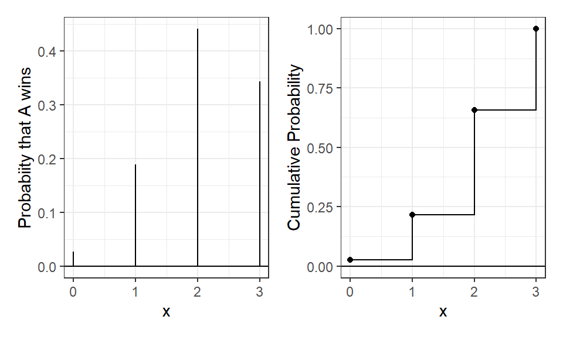
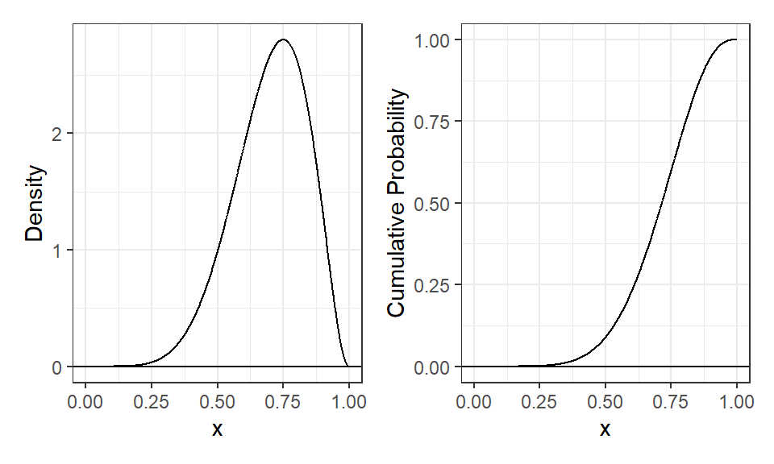
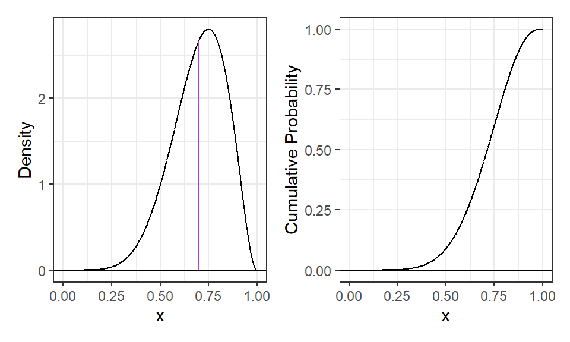
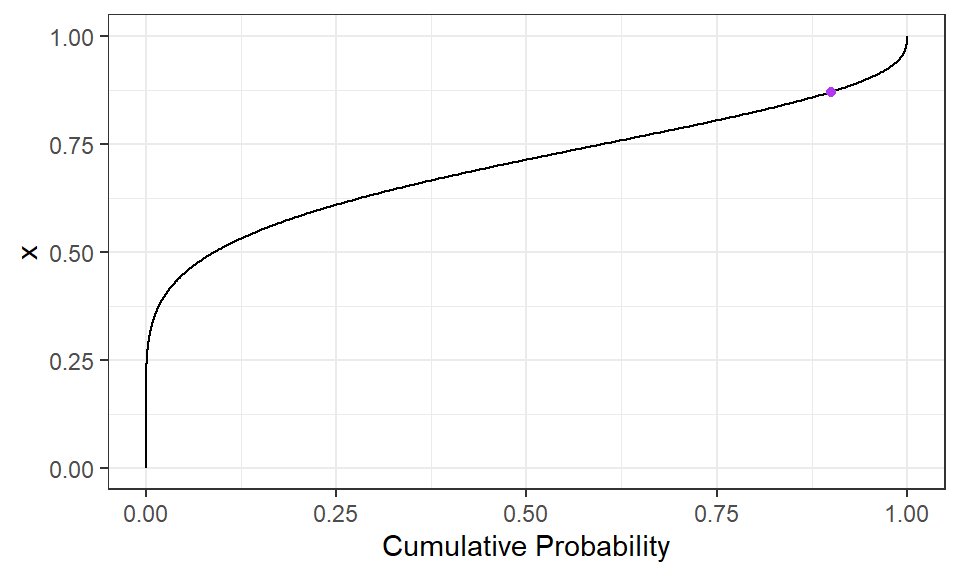
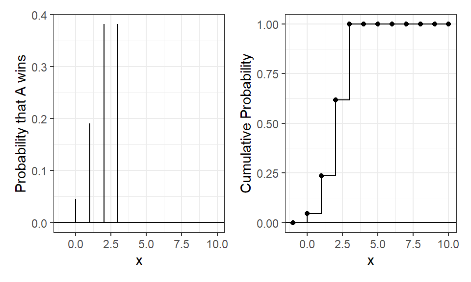
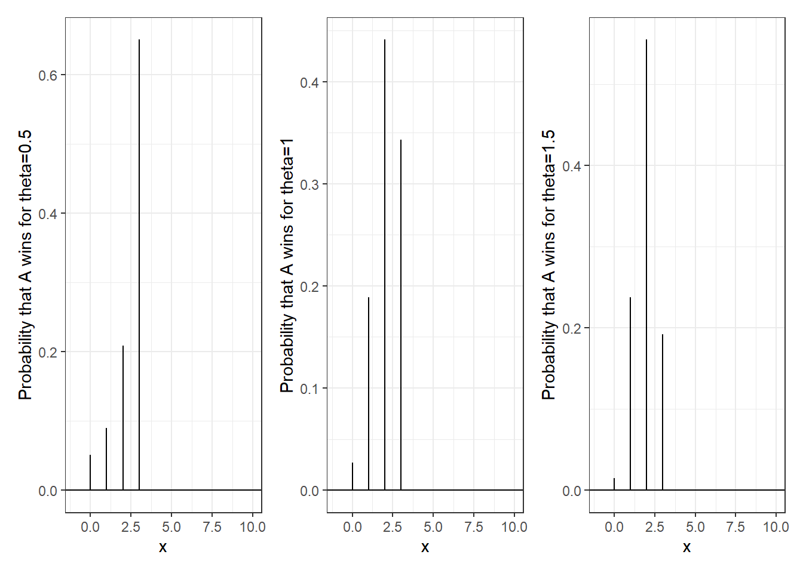
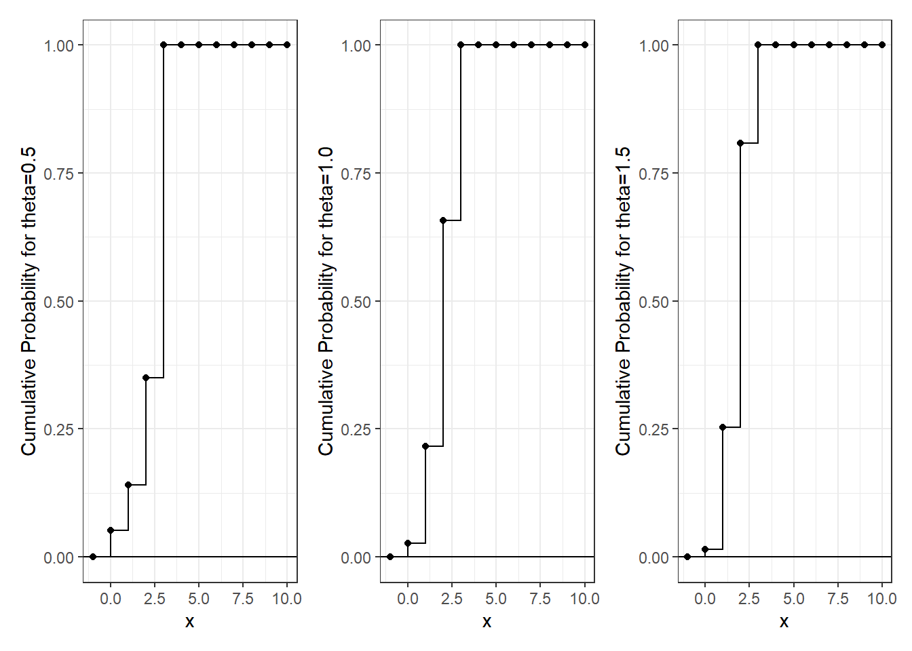
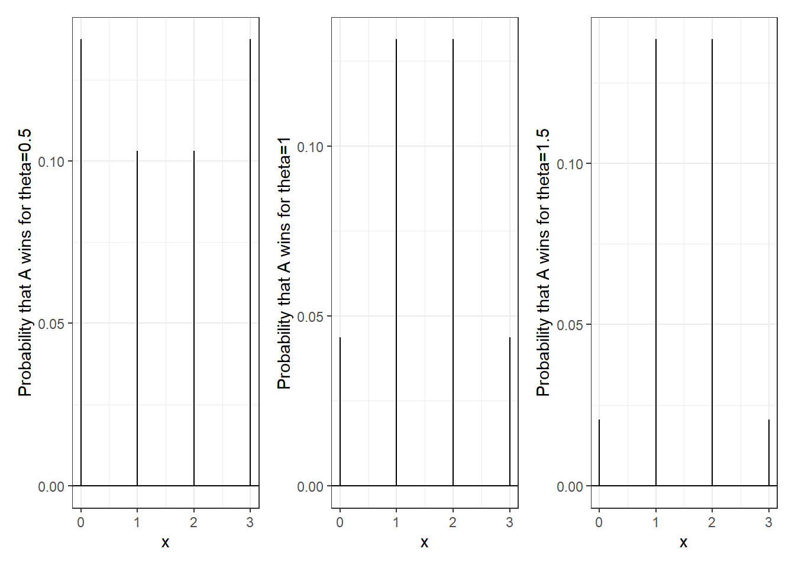
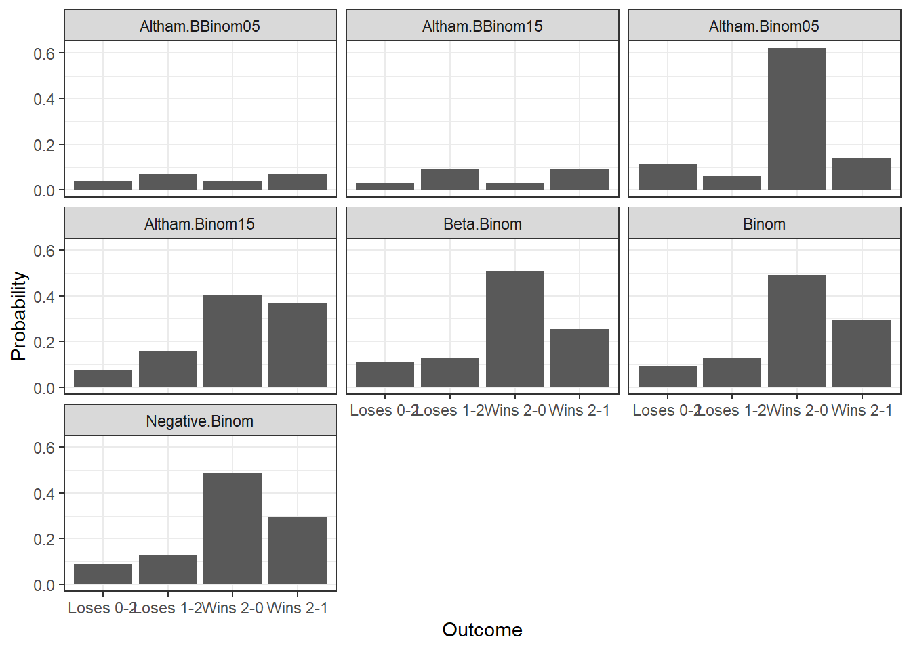

Complete the tasks below. Make sure to start your solutions in on a new line that starts with “Solution:”.
Make sure to use the Quarto Cheatsheet. This will make completing and writing up the lab much easier.
Make sure to use “enter” to make your code readable, so it doesn’t run off the page. I switched the Quarto document to automatically render to .pdf, so you can see what you’re submitting by default. You can switch back for the highlighting by moving the html block above the pdf block in the YAML header.
Don’t forget that you can copy-and-paste code when you’re doing something similar as we did in class!
Make sure to plot all computed probabilities. This is good ggplot practice AND will help make sure you don’t make a mistake when computing the probability.
1 The Binomial and Negative Binomial Distributions
1.1 The Binomial Distribution
In many introductory courses, we make the simplifying assumption of independence in Bernoulli trials. For example, when playing best two-out-of-three legs in a darts match, we would assume Player A has an 70% chance of winning each leg. We write: \[X \sim \text{Binomial}(n=3, p=0.70)\] where
\(X\) is the number of legs won
\(n\) is the number of trials
\(p\) is the probability of the event of interest
Of note, it is not necessarily the case that the players play all three legs – if either player wins legs one and two the match ends.
There are eight possible outcomes for Player A:
(win, win, “win”) \(\longrightarrow\) Player A wins
(win, win, “lose”) \(\longrightarrow\) Player A wins
(win, lose, win) \(\longrightarrow\) Player A wins
(win, lose, lose) \(\longrightarrow\) Player A loses
(lose, win, win) \(\longrightarrow\) Player A wins
(lose, win, lose) \(\longrightarrow\) Player A loses
(lose, lose, “win”) \(\longrightarrow\) Player A loses
(lose, lose, “lose”) \(\longrightarrow\) Player A loses
Note: I use quotations above to denote outcomes where the last match isn’t actually played.
Use the Binomial distribution to compute the probability that Player A wins the match. Make sure write out your probability statement and work to write it in terms of the distribution function (PMF/CDF) to plot the probability using ggplot.
Solution:
Used dbinom to find the binomial probabilty distribution in which player A wins the three games and plotted both the CDF and PMF with ggplot(...). Calculated the probability that A wins using the CDF P(X>=2)=1-P(X<2)=1-P(X<=1) and plotted the PMF and CDF.
Code
# tibble with PMF & PDF valuesfor each x from 0:3gg.dat<-tibble(x=0:3) |>mutate(PMF=dbinom(x, size=3, prob =0.70),CDF=pbinom(x, size=3, prob=0.70))# probability A wins- CDFp.win <-sum(dbinom(2:3, size =3, prob =0.70))(p.win)
[1] 0.784
Code
# PMF plotPMF.plot<-ggplot(data=gg.dat)+geom_linerange(aes(x=x, ymin=0, ymax=PMF))+geom_hline(yintercept=0)+theme_bw()+ylab("Probabiity that A wins")# CDF plotCDF.plot<-ggplot(data=gg.dat) +geom_step(aes(x=x, y=CDF))+geom_point(aes(x=x, y=CDF))+geom_hline(yintercept=0)+theme_bw()+ylab("Cumulative Probability")PMF.plot | CDF.plot
Figure 1: PMF and CDF plots for Binomial Distribution.

1.2 The Negative Binomial Distribution
In intermediate courses, we learn the Negative Binomial distribution that we use to model the number of “failures” until the \(r\)th success. Note that this approach still makes the simplifying assumption of independence in Bernoulli trials.
Specify the two cases necessary to compute the probability. Fully explain these probability statements in the context of a best two-out-of-three match and the Negative Binomial distribution. Finally, compute the probability that Player A wins the match and show you get the same result as the Binomial approach. Make sure write out your probability statement and work to write it in terms of the distribution function (PMF/CDF) to plot the probability using ggplot.
Solution: Found the number of times that player A loses the game before actually winning the match. Number of successes in this game is (r=2). Finding the negative binom is X ~ NegativeBinom(r=2, p=0.70)
Code
gg.dat<-tibble(x=-1:10) |>mutate(PMF=dnbinom(x, size=3, prob =0.70),CDF=pnbinom(x, size=3, prob=0.70))# PMF plotPMF.plot<-ggplot(data=gg.dat)+geom_linerange(aes(x=x, ymin=0, ymax=PMF))+geom_hline(yintercept=0)+theme_bw()+ylab("Probabiity")+xlab("Number of failures before 2nd win")# CDF plotCDF.plot<-ggplot(data=gg.dat) +geom_step(aes(x=x, y=CDF))+geom_point(aes(x=x, y=CDF))+geom_hline(yintercept=0)+theme_bw()+ylab("Number of failure before 2nd win")PMF.plot | CDF.plot
Figure 2: PMF and CDF plots for Negative Distribution.
One approach to generalize this modeling is to use a Beta-Binomial distribution. This distribution arrises when we let \(p\) be a random variable that follows a Beta distribution: \[\begin{align*}
P &\sim \text{Beta}(\alpha, \beta)\\
X &\sim \text{Binomial}(n, P).
\end{align*}\] This distribution is not part of base R, but is available using the _bbinom functions from the extraDistr package (Wolodzko 2026).
The primary benefit is that the Beta-Binomial enables us to specify some uncertainty about the skill of Player A, as \(p\) does not have to be fixed (e.g., \(p=0.70\)). Suppose the result of the best two-out-of-three match follows a Beta-Binomial distribution where \(\alpha=7\) and \(\beta=3\).
2.1 The Beta Part
Plot the corresponding Beta distribution. Interpret the plot in the context of a best two-out-of-three match and the Binomial distribution. Hint: The Beta distribution is available in base R via _beta().
Solution:
Plotted the PDF and CDF of the corresponding beta distribution. In the context of a best two-out-of-three match, it means the probability that Player A wins each leg is not assumed to be exactly 0.70 every time. The Beta distribution represents our uncertainty about Player A’s ability.
Code
# aplha & beta valuesalpha=7beta=3# continous data on PDF & CDFgg.dat<-tibble(x=seq(0, 1, length.out=1000)) |>mutate(PDF=dbeta(x, alpha, beta),CDF=pbeta(x, alpha, beta))# PDF plotPDF.plot<-ggplot(data=gg.dat)+geom_line(aes(x=x,y=PDF))+geom_hline(yintercept=0)+theme_bw()+ylab("Density")# CDF plotCDF.plot<-ggplot(data=gg.dat) +geom_line(aes(x=x, y=CDF))+geom_hline(yintercept=0)+theme_bw()+ylab("Cumulative Probability")PDF.plot | CDF.plot
Figure 3: PMF and CDF plots for Beta -Binom Distribution.

How does the Beta incorporate uncertainty about the skill of Player A? Compute the mean and variance of the distribution. Hint: You will find the integrate(...) function helpful here. \[\begin{align*}
E(P) &= \mu_P = \int_{0}^1 p f_P(p) dp\\
var(P) &= \sigma^2_P = \int_{0}^1 (p-\mu_P)^2 f_P(p) dp\\
\end{align*}\]
Solution:
Created functions to compute mean and variance and used the integrate(...) function to integrate them from 0 to 1.
Code
#|size: scriptsize# funciton to calculate meanmean.val <-function(p) { p *dbeta(p, alpha, beta) }# integrate from 0 to 1(mu <-integrate(mean.val, lower =0, upper =1)$value)
[1] 0.7
Code
# funciton to calculate variancevariance.val<-function(p){ (p-mu)^2*dbeta(p, alpha, beta)}# integrate from 0 to 1(variance <-integrate(variance.val, lower =0, upper =1)$value)
[1] 0.01909091
What is the probability that Player A has a win probability of exactly 0.70? Make sure write out your probability statement and work to write it in terms of the distribution function (PDF/CDF) to plot the probability using ggplot. Hint: Think carefully about the properties of continuous distributions here.
Solution:
The probability of player A having a win probability of 0.70 is P(X=0.70)= 0 because area under the PDF curve for a single point is 0 since it has no width.
Code
# continous (x) for PDF and CMFgg.dat<-tibble(x=seq(0, 1, length.out=1000)) |>mutate(PDF=dbeta(x, alpha, beta),CDF=pbeta(x, alpha, beta))# PDF plotPDF.plot<-ggplot(data=gg.dat)+geom_line(aes(x=x,y=PDF))+geom_linerange(data=tibble(x=0.70)|>mutate(PDF=dbeta(x,alpha,beta)),aes(x= x,ymin=0, ymax=PDF),color="darkorchid2")+geom_hline(yintercept=0)+theme_bw()+ylab("Density")# CDF plotCDF.plot<-ggplot(data=gg.dat) +geom_line(aes(x=x, y=CDF))+geom_hline(yintercept=0)+theme_bw()+ylab("Cumulative Probability")PDF.plot | CDF.plot
Figure 4: PMF and CDF plots for P (X=0.70).

What is the probability that Player A has a win probability of at least 0.50? Make sure write out your probability statement and work to write it in terms of the distribution function (PDF/CDF) to plot the probability using ggplot.
Solution:
The probability of player A having a win probability of at least 0.50 is P(X>=0.50) = 1-P(X<0.50)= 1-P(X<=0.50) which is same as F(x) in the CDF
Code
# contious x for PDF and CDF in beta distribgg.dat<-tibble(x=seq(0, 1, length.out=1000)) |>mutate(PDF=dbeta(x, alpha, beta),CDF=pbeta(x, alpha, beta))# probability of A winning (>=0.5)p.win=1-pbeta(0.50, 7, 3)(p.win)
What is the 90th percentile of Player A’s win probability based on this Beta distribution? Make sure write out your probability statement and work to write it in terms of the distribution function (PDF/CDF) to plot the percentile using ggplot.
Solution:
The 90th percentile of player A’s win probability is P(X=x)=0.90 and is found by using the inverse CDF function qbeta(..) and plootted the distribution by inversing the CDF plot
Code
# created a tibble with two columns, PMF and CDFgg.dat <-tibble(x =seq(0, 1, length.out =1000)) |>mutate(PDF =dbeta(x, alpha, beta),CDF =pbeta(x, alpha, beta))# inverse using qbeta(...)inv<-qbeta(0.90, alpha, beta)(inv)
[1] 0.8705027
Code
# Plotted the inverse cdf to show value in 90th percentileinv.CDF.plot <-ggplot(data = gg.dat) +geom_line(aes(x = CDF, y = x)) +geom_point(data =tibble(CDF =0.90, x = inv), aes(x = CDF, y = x), color ="darkorchid2") +theme_bw() +xlab("Cumulative Probability") +ylab("x")inv.CDF.plot
Figure 6: PMF and CDF plots for 90th Percentile.

2.2 The Beta-Binomial Part
Compute the probability that Player A wins the match. Compare your result to the Binomial and Negative Binomial results. Make sure write out your probability statement and work to write it in terms of the distribution function (PMF/CDF) to plot the probability using ggplot
Solution:
Finding X-Beta-Binomial(n=3,alpha=7,beta=3). P(X>=2)=1-P(X<2)=1-P(X<=1) then finding the CDF and P(X<=1) and subtracting from 1.
Code
# created a tibble with two columns, PMF and CDFgg.dat<-tibble(x=-1:10) |>mutate(PMF=dbbinom(x, size=3, alpha, beta),CDF=pbbinom(x, size=3, alpha, beta))# 1-P(X<=1)p.win <-1-pbbinom(1, size=3, alpha, beta)(p.win)
[1] 0.7636364
Code
# PMF plot using linerangePMF.plot<-ggplot(data=gg.dat)+geom_linerange(aes(x=x, ymin=0, ymax=PMF))+geom_hline(yintercept=0)+theme_bw()+ylab("Probability that A wins")# CDF plot shown in stepsCDF.plot<-ggplot(data=gg.dat) +geom_step(aes(x=x, y=CDF))+geom_point(aes(x=x, y=CDF))+geom_hline(yintercept=0)+theme_bw()+ylab("Cumulative Probability")PMF.plot | CDF.plot
Figure 7: PMF and CDF plots for Binom.

2.3 The Why
Check the expected value and variance of each distribution.
For each distribution, compute the mean number of legs won for player A. Hint: You can perform the sum over the finite support set here. \[\begin{align*}
E(X) = \mu_X &= \sum_{i=0}^3 i f_X(i)\\
var(X) = \sigma_X &= \sum_{i=0}^3 (i-\mu_X) f_X(i)
\end{align*}\]
Solution:
Created functions to compute the mean and variance by using the formula and summed using the sum() function the applied values 0 to 3 using sapply(...)
Code
#|size: scriptsize# function to mean calculate given the formulamean.val <-function(i) { i *dbbinom(i, 3, alpha, beta) # i * beta binomial }(mu <-sum(sapply(0:3, mean.val))) ## use sapply to find sum to 3
[1] 2.1
Code
# function to calculate variance given the formulavariance.val<-function(i){ (i-mu)^2*dbbinom(i, 3, alpha, beta)}(variance <-sum(sapply(0:3, variance.val))) ## use sapply to find sum to 3
[1] 0.7445455
3 Altham’s Multiplicative Binomial Distribution
While the Beta-Binomial enables us to model cases where winning has a clustering effect (e.g., a “hot hand”).
3.1 Probability Mass Function
The mass function for this distribution is below. While it used to be available in the MBD package for R, this package is no longer available. \[f_X(x) = \frac{1}{c} {n \choose x} p^x (1-p)^{n-x} \theta^{x(n-x)}I(x \in \{0, 1, ..., n\})\] where \[c = \sum_{i=0}^n {n \choose i} p^i (1-p)^{n-i} \theta^{i(n-i)}\]
Write a function in R called daltbinom() for computing the PMF of this distribution. Use your function to plot the distribution where \(p=0.70\) where \(\theta=0.50\), \(\theta=1\), and \(\theta=1.50\). Comment on the differences in the context of a best two-out-of-three match
Solution:
Creating a function daltbinom() with arguments x, size for number of observations, p for probability, and t for theta then implemented the given MF formula to obtain the PMF. Used that function to plot the PMF of the data for different theta values.
Code
#|size: scriptsize# daltbinom function for computing the PMF given the formula and argument valuesdaltbinom <-function(x, size, p, t){ i<-0:size c<-sum(choose(size, i)*p^i*(1-p)^(size-i)*t^(i*(size-i))) # summation for formulaifelse(x >=0& x<=size, choose(size, x)*p^x*(1-p)^(size-x)*t^(x*(size-x))/c, 0)}# created variables with PMF values with different theta valuesgg.dat1<-tibble(x=-1:10) |>mutate(PMF=daltbinom(x, size=3, 0.70, 0.5))gg.dat2<-tibble(x=-1:10) |>mutate(PMF=daltbinom(x, size=3, 0.70, 1))gg.dat3<-tibble(x=-1:10) |>mutate(PMF=daltbinom(x, size=3, 0.70, 1.5))# PMF plot for when theta is 0.5PMF.plot1<-ggplot(data=gg.dat1)+geom_linerange(aes(x=x, ymin=0, ymax=PMF))+geom_hline(yintercept=0)+theme_bw()+ylab("Probability that A wins for theta=0.5")# PMF plot for when theta is 1PMF.plot2<-ggplot(data=gg.dat2)+geom_linerange(aes(x=x, ymin=0, ymax=PMF))+geom_hline(yintercept=0)+theme_bw()+ylab("Probability that A wins for theta=1")# PMF plot for when theta is 1.5PMF.plot3<-ggplot(data=gg.dat3)+geom_linerange(aes(x=x, ymin=0, ymax=PMF))+geom_hline(yintercept=0)+theme_bw()+ylab("Probability that A wins for theta=1.5")PMF.plot1 | PMF.plot2 | PMF.plot3

3.2 Cumulative Distribution Function
Use your daltbinom() function to create a paltbinom() function for computing the CDF of this distribution. Use your function to plot the distribution where \(p=0.70\) where \(\theta=0.50\), \(\theta=1\), and \(\theta=1.50\).
Solution:
Created a paltbinom() function to compute the CDF using the PMF values obtained from the function daltbinom(). Summed all the values from 0 to i to obtain this and used vectorized ifelse() function to mormalise to 0 if > 0 or 1 if >=size
Code
#|size: scriptsize# summation helper function to calculate the sum(CDF)summation<-function(i, size, p, t){ vals=0:i # from 0 to isum(daltbinom(vals, size, p, t)) #summing the pdf from 0 to i}#paltbinom function for CDFpaltbinom <-function(x, size, p, t){ifelse(x <0, 0, ifelse(x >= size, 1, sapply(x, summation, size, p, t)))# 0 if x is less than 0, else if greater than size, 1. Apply daltbinom if not less than 0 or greater than/equal to size}# created variables with PMF values with different theta valuesgg.dat1<-tibble(x=-1:10) |>mutate(CDF=paltbinom(x, size=3, p=0.70, t=0.5))gg.dat2<-tibble(x=-1:10) |>mutate(CDF=paltbinom(x, size=3, p=0.70, t=1))gg.dat3<-tibble(x=-1:10) |>mutate(CDF=paltbinom(x, size=3, p=0.70, t=1.5))# CDF plot for when theta is 0.5CDF.plot1<-ggplot(data=gg.dat1) +geom_step(aes(x=x, y=CDF))+geom_point(aes(x=x, y=CDF))+geom_hline(yintercept=0)+theme_bw()+ylab("Cumulative Probability for theta=0.5")# CDF plot for when theta is 1CDF.plot2<-ggplot(data=gg.dat2) +geom_step(aes(x=x, y=CDF))+geom_point(aes(x=x, y=CDF))+geom_hline(yintercept=0)+theme_bw()+ylab("Cumulative Probability for theta=1.0")# CDF plot for when theta is 1.5CDF.plot3<-ggplot(data=gg.dat3) +geom_step(aes(x=x, y=CDF))+geom_point(aes(x=x, y=CDF))+geom_hline(yintercept=0)+theme_bw()+ylab("Cumulative Probability for theta=1.5")CDF.plot1 | CDF.plot2 | CDF.plot3

3.3 The Winning Probability
Compute the probability that Player A wins the match using Altham’s Multiplicative Binomial Distribution. Compare your result to the Binomial and Negative Binomial results. Compare your results to the Beta-Binomial model, too. Make sure write out your probability statement and work to write it in terms of the distribution function (PMF/CDF) to plot the probability using ggplot.
Solution:
Finding P(X>=2)=P(X<2)=1−P(X<=1). Used the CDF at P(x<=1) and subtracted it from one to find the winning probability then plotted the PMF and CDF
Code
#|size: scriptsize# created a tibble with two columns, PMF and CDF# for 0.5gg.data1 <-tibble(x =0:3) |>mutate(PMF =daltbinom(x, size =3, 0.70, 0.5),CDF =paltbinom(x, size =3, 0.70, 0.5) )p.win1<-1-paltbinom(1, size =3, p =0.70, t =0.5)(p.win1)
[1] 0.8592417
Code
## for 1.0gg.data2 <-tibble(x =0:3) |>mutate(PMF=daltbinom(x, size =3, 0.70, 1),CDF=paltbinom(x, size =3, 0.70, 1) )p.win2<-1-paltbinom(1, size =3, p =0.70, t =1)(p.win2)
[1] 0.784
Code
## for 1.5gg.data3 <-tibble(x =0:3) |>mutate(PMF=daltbinom(x, size =3, 0.70, 1.5),CDF=paltbinom(x, size =3, 0.70, 1.5) )p.win3 <-1-paltbinom(1, size =3, p =0.70, t =1.5)(p.win3)
4 Altham’s Multiplicative Beta-Binomial Distribution
You may have wondered – “Can we do the Beta thing with Altham’s version of the Binomial Distribution?” The answer is yes!
4.1 Probability Mass Function
The mass function for this distribution is below. \[f_X(x) = \left[\int_{0}^1 dp
\left(\frac{1}{c} {n \choose x} p^x (1-p)^{n-x} \theta^{x(n-x)}\right)\left(\frac{\Gamma(\alpha+\beta)}{\Gamma(\alpha)\Gamma(\beta)} p^{\alpha-1}(1-p)^{\beta-1}\right)\right]I(x \in \{0, 1, ..., n\})\]
Write a function in R called daltbbinom() for computing the PMF of this distribution. Use your function to plot the distribution where \(\alpha=7\) and \(\beta=3\) where \(\theta=0.50\), \(\theta=1\), and \(\theta=1.50\). Comment on the differences in the context of a best two-out-of-three match.
Hint: You can use the integrate() in R to compute the integral. Note that this requires the function to be vectorized – it should be unless you have added any block conditionals.
Solution:
Created a new daltbbinom() function to compute the Beta-mixed PMF. Generated plots for different theta values and used sapply() to evaluate the function across x values.
Code
#|size: scriptsize# daltbbinom function for computing the PMF given the formula and argument valuesdaltbbinom <-function(x, size, t, a, b){if (x <0|| x > size) return(0) integrand <-function(p){ ## create function to calculate given the formuladaltbinom(x, size, p, t) *dbeta(p, a, b) # daltbinom * dbeta- formula }integrate(integrand, lower =0, upper =1)$value # integrate from 0 to 1}#given alpha and beta valuesalph=7bet=3# created variables with PMF values with different theta values using sapply to apply the x values in the functiongg.dat1 <-tibble(x =0:3) |>mutate(PMF =sapply(x, daltbbinom, size =3, t =0.5, a = alph, b = bet)) gg.dat2 <-tibble(x =0:3) |>mutate(PMF =sapply(x, daltbbinom, size =3, t =1, a = alph, b = bet)) gg.dat3 <-tibble(x =0:3) |>mutate(PMF =sapply(x, daltbbinom, size =3, t =1.5, a = alph, b = bet))# PMF plot for when theta is 0.5PMF.plot1<-ggplot(data=gg.dat1)+geom_linerange(aes(x=x, ymin=0, ymax=PMF))+geom_hline(yintercept=0)+theme_bw()+ylab("Probability that A wins for theta=0.5")# PMF plot for when theta is 1PMF.plot2<-ggplot(data=gg.dat2)+geom_linerange(aes(x=x, ymin=0, ymax=PMF))+geom_hline(yintercept=0)+theme_bw()+ylab("Probability that A wins for theta=1")# PMF plot for when theta is 1.5PMF.plot3<-ggplot(data=gg.dat3)+geom_linerange(aes(x=x, ymin=0, ymax=PMF))+geom_hline(yintercept=0)+theme_bw()+ylab("Probability that A wins for theta=1.5")PMF.plot1 | PMF.plot2 | PMF.plot3

5 A Comparison
Compute the probabilities for all outcomes for Player A.
Loses 0-2 (LL”L”, LL”W”)
Loses 1-2 (WLL, LWL)
Wins 2-0 (WW”W”, WW”L”)
Wins 2-1 (LWW, WLW)
Note: You’ll need to define these outcomes in terms of the random variable.
Create a bar plot (or column plot) using ggplot to show the probability of each outcome under the following conditions:
Binomial
Negative Binomial Note: You can compute the lose probabilities the same way as the win probabilities using success probability (\(1-p\))
Beta-Binomial
Althman Binomial with \(\theta=0.50\) and \(\theta=1.5\)
Althman Beta-Binomial with \(\theta=0.50\) and \(\theta=1.5\)
Comment on the differences in the context of a best two-out-of-three match.
Solution
Computed probabilities for all listed outcomes using all the distriibutions and stored them in vectors then created a tibble with all the probabilities from the distributions and plotted them using a bar plot
# reshaping with pivot_longgg.long <- gg.dat |>pivot_longer(cols =-Outcome,names_to ="Distribution",values_to ="Probability" )# bar plot for all distribsggplot(gg.long, aes(x = Outcome, y = Probability)) +geom_col() +facet_wrap(~ Distribution) +theme_bw() +ylab("Probability") +xlab("Outcome")

Comment
The Binomial and Negative Binomial models give almost the same probabilities for the outcomes, with Player A more likely to win the match since they have a higher chance of winning each leg. The Beta-Binomial spreads the probabilities out a bit due to uncertainty in Player A’s skill, while the Altham models change how balanced the match looks depending on the value of theta.